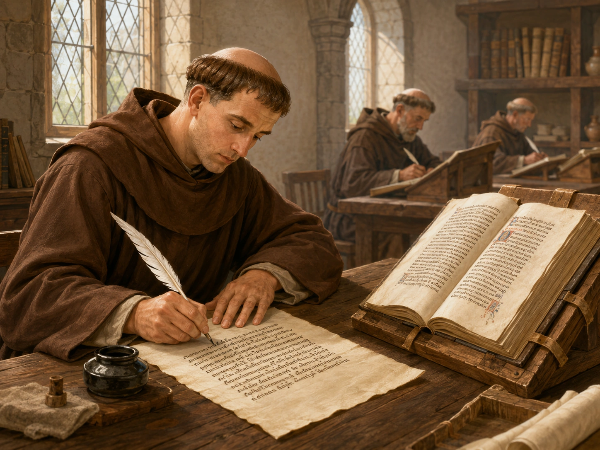
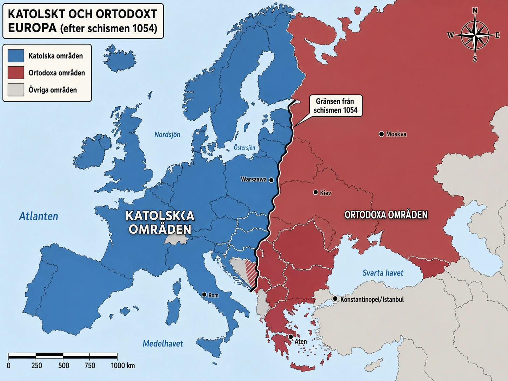

— en organisation som överlevde när allt annat föll —
När Västrom föll år 476 försvann den starka staten i Västeuropa. Men en organisation fanns kvar — och växte i betydelse: den kristna kyrkan.
När Västrom föll år 476 försvann mycket. Lagar, soldater, ämbetsmän — allt blev svagare. Men den kristna kyrkan fanns kvar. Den hade präster, biskopar och kyrkor i nästan alla städer och byar. Kyrkan blev en av medeltidens viktigaste organisationer.
Nästan alla i Västeuropa var kristna under medeltiden. Människor gick i kyrkan, bad och firade kyrkans högtider. Kyrkan följde människan från dop som baby till begravning som död. Bröllop och högtider skedde också i kyrkan.
I klostren bodde munkar och nunnor. De bad, arbetade och studerade. Munkarna kopierade böcker för hand — det fanns inga tryckpressar. Så bevarades mycket kunskap från antiken. I medeltidens Västeuropa var kyrkan den största platsen för läs- och skrivkultur.

Kyrkan hade också politisk makt. Påven i Rom blev den viktigaste kyrkliga ledaren. Biskopar ägde mark och hade stort inflytande. Kungar ville ha kyrkans stöd, eftersom det gjorde dem mäktigare.
Västeuropa var splittrat i många kungariken som ofta krigade. Men kyrkan fanns nästan överallt och använde latin som gemensamt språk. En människa i Frankrike, England eller Tyskland kunde tillhöra olika riken men ändå dela samma tro och kyrkliga ordning.
I nästa del ska vi se hur kyrkan ändå inte var enad — och hur väst och öst växte isär.
När Västromerska riket föll år 476 försvann den starka staten i Västeuropa. Soldater, ämbetsmän, skatter och lagar fungerade inte längre som förut. Många städer krympte. Handeln minskade. Människor blev mer beroende av lokala stormän för skydd. Men en organisation fanns kvar — och växte i betydelse: den kristna kyrkan.
När Västromerska riket föll år 476 förändrades livet i Västeuropa dramatiskt. Den romerska staten hade tidigare haft soldater, lagar, vägar, skatter och ämbetsmän som höll ihop samhället. När riket föll försvagades denna ordning. Många städer krympte, handeln minskade och människor blev mer beroende av lokala stormän och kungar för skydd.
Men en viktig organisation fanns kvar: den kristna kyrkan.
Kyrkan blev därför mycket betydelsefull i Västeuropa. Den fungerade som en sammanhållande kraft när det inte längre fanns ett starkt romerskt rike i väst. Präster, biskopar och kloster fanns på många platser, och kyrkan hjälpte till att skapa ordning, trygghet och gemensamma regler.
Under medeltiden var nästan alla människor i Västeuropa kristna. Tron på Gud, Jesus, himmel och helvete påverkade hur människor tänkte om livet. Kyrkan lärde ut hur människor skulle leva för att vara goda kristna. Man skulle gå i kyrkan, be, följa Guds bud och lyda kyrkans lära.
Kyrkan var därför inte bara en religiös plats. Den påverkade människors vardag, moral och syn på rätt och fel. Dop, bröllop, begravningar och högtider skedde genom kyrkan. Den följde människan från födelse till död.
Efter Västroms fall minskade utbildningen i många delar av Europa. Färre människor kunde läsa och skriva. Men inom kyrkan fanns människor som behärskade latin, läste böcker och skrev texter.
Särskilt viktiga var klostren. I klostren levde munkar och nunnor. Där bad man, arbetade och studerade. Munkar kopierade böcker för hand, eftersom det inte fanns tryckpressar. På så sätt bevarades mycket kunskap från antiken — texter om religion, filosofi, historia och vetenskap. Kyrkan blev medeltidens viktigaste bärare av bildning.
Vill du veta mer om livet i ett kloster — om dagsrytmen, skriptoriet och vad munkarna egentligen gjorde — så finns en djupdykning om det längst ner på sidan.
Kyrkan hade också stor politisk makt. Påven i Rom blev den viktigaste ledaren för den västliga kyrkan. Många kungar ville ha kyrkans stöd, eftersom kyrkan kunde ge deras makt religiös legitimitet. Om kyrkan stödde en kung kunde människor uppfatta kungen som vald eller godkänd av Gud.
Biskopar och abbotar (klosterledare) kunde också vara mycket mäktiga personer. De ägde jord, tog emot skatter och hade inflytande över kungar och stormän. Kyrkan blev därför en av Europas största maktfaktorer — inte bara religiös, utan politisk och ekonomisk.
Även om Europa var splittrat i många olika kungariken fanns kyrkan nästan överallt. Latin användes som kyrkans språk, och präster över hela Västeuropa tillhörde samma religiösa system. Det skapade en gemensam kultur.
En människa i Frankerriket, England eller Tyskland kunde tillhöra olika folk och kungariken, men ändå dela samma kristna tro och kyrkliga tradition. En präst som lärt sig latin kunde resa till andra länder och hålla mässa där. En lärd munk kunde läsa samma böcker som en lärd munk hundratals mil bort.
Så blev kyrkan inte bara en religiös institution. Den blev en av de få krafter som höll ihop ett splittrat Västeuropa.
I nästa del ska vi se hur kyrkan ändå inte var enad. Mellan väst och öst växte skillnader fram som till slut ledde till en stor splittring.
När Västromerska riket föll år 476 försvann den starka staten i Västeuropa. Soldater, ämbetsmän, skatter och lagar fungerade inte längre som förut. Många städer krympte. Handeln minskade. Människor blev mer beroende av lokala stormän för skydd. Men en organisation fanns kvar — och växte i betydelse: den kristna kyrkan. I detta avsnitt ska vi se hur kyrkan blev en av medeltidens viktigaste krafter i Västeuropa, och hur den med tiden splittrades i två stora delar.
År 476 brukar räknas som året då Västromerska riket föll. Som du läste i förra avsnittet är det ett komplicerat datum — mycket av det romerska levde vidare under germanska kungar. Men en sak är sann: den centrala romerska staten i väst — kejsaren, hovet, den stora armén, det stora skattesystemet — försvann faktiskt. Det som hade hållit ihop Västeuropa under fyra hundra år var inte längre där.
Det skapade en kris. Städer krympte. Handeln över långa avstånd minskade. Vägarna underhölls sämre. Människor blev fattigare. Många flydde till landsbygden och blev beroende av lokala stormän för skydd. Västeuropa blev splittrat, lokalt och osäkert.
Mitt i denna kris fanns en organisation som överlevde: den kristna kyrkan. Kristendomen hade blivit Romarrikets statsreligion redan på 300-talet. När den romerska staten försvann i väst, fanns kyrkan kvar — med biskopar i städer, präster i byar och kloster på landsbygden. Den hade samma struktur som romersk administration: hierarkisk, organiserad, med Rom som centrum. Men medan den romerska staten kollapsade, anpassade kyrkan sig och växte.
Det är en av medeltidens viktigaste historiska punkter. När du läser om "den mörka medeltiden" — om att samhället krympte, att det blev fattigare, att antikens lärdom delvis försvann — så ska du komma ihåg att kyrkan var det som bar mycket av kontinuiteten genom denna kris. Utan kyrkan hade Västeuropa förlorat ännu mer av det romerska arvet.
Att förstå medeltiden kräver att man förstår hur grundligt kristendomen formade människors tänkande. För en medeltida människa var Gud inte en abstraktion. Han var verklighet. Himmel och helvete var lika konkreta som städer och floder. Synd, frälsning, mirakel och domedag var inte myter — det var hur världen fungerade.
Detta påverkade allt. När någon blev sjuk kunde det förstås som ett straff för synd eller som en prövning från Gud. När skörden var dålig var det kanske Guds vrede. När en kung vann ett slag var det Guds vilja. Religion var inte ett område bredvid livet — det genomsyrade hela tillvaron.
Kyrkan kontrollerade tillträdet till denna värld. Genom dop blev man en kristen, en del av gemenskapen. Genom mässan kunde man få kontakt med det heliga. Genom bikt kunde man få sina synder förlåtna. Genom sista smörjelsen kunde man dö försonad med Gud. Hela livet — från vaggan till graven — gick genom kyrkans händer.
För en kung eller en stormän som hotades med uteslutning ur kyrkan (det som kallades exkommunikation) var det inte bara religiöst hot. Det var praktiskt hot — om man dog exkommunicerad gick själen till helvetet. Det gav kyrkan en makt över människor som ingen annan institution hade.
Inom kyrkan spelade klostren en särskild roll. I klostren levde munkar och nunnor enligt sträng disciplin. Dygnet var indelat i tider för bön, arbete och studier. Vid skriptoriet — klostrets skrivsal — satt munkarna i timmar och kopierade texter för hand. Pergament av djurhud, bläck av sot och vatten, gåspennor. En enda bok kunde ta månader att färdigställa.
Och det de kopierade var inte bara biblar och böneböcker. De kopierade också gamla romerska och grekiska verk — Vergilius, Cicero, Aristoteles, Platon. Mycket av antikens lärdom hade kanske försvunnit helt om inte munkarna i kloster runt om i Europa hade fortsatt skriva av handskrifterna generation efter generation.
Klostren var också ekonomiska centra. Munkar och nunnor odlade mark, höll boskap, tillverkade vin, öl, ost och läkemedel. Många stora kloster hade enorma ägor och var rika institutioner. Att gå i kloster var inte alltid att fly från världen — det kunde också vara att gå in i en av tidens viktigaste organisationer.
Vill du läsa mer om livet i ett medeltida kloster, finns en djupdykning om det längst ner på sidan.
I Västeuropa blev påven i Rom kyrkans högsta ledare. Den traditionen byggde på en tanke om att aposteln Petrus — Jesu lärjunge — varit Roms förste biskop, och att alla senare påvar var hans efterföljare. Det gav påven en särskild auktoritet som ingen annan biskop hade.
Påvarna fick med tiden mycket politisk makt. De kunde kröna kejsare — som när påven krönte Karl den store till romersk kejsare år 800. De kunde fördöma kungar genom exkommunikation. De kunde också besluta om kyrkliga frågor som påverkade hela Västeuropa.
Under påven fanns biskopar i större städer och abbotar i klostren. Många av dessa var lika mäktiga som världsliga stormän. De ägde stora jordområden. De tog emot skatter och avgifter. De hade egna soldater och egna domstolar. En biskop kunde i praktiken vara länets viktigaste härskare, mer än ens en lokal greve.
Detta skapade en intressant maktstruktur. Världslig makt (kungar, hertigar, grevar) och kyrklig makt (påvar, biskopar, abbotar) levde sida vid sida — ibland i samarbete, ibland i konflikt. Vi ska se hur den konflikten utvecklas under senare medeltid, men redan tidigt fanns spänningen där.
Västeuropa under tidig medeltid var splittrat. Frankerriket. De anglosaxiska kungarikena i England. Visigotiska riket i Spanien. Olika germanska kungar och stormän. Krig var vanliga. Resor var farliga. Det fanns inget gemensamt politiskt centrum.
Men kyrkan fanns nästan överallt. Och kyrkan hade gemensamt språk — latin. En präst som lärt sig latin i Frankrike kunde hålla mässa i England eller Tyskland. En lärd munk kunde läsa samma böcker som en lärd munk hundratals mil bort. En biskop kunde resa till Rom och tala samma kyrkliga språk som påven.
Detta gjorde kyrkan till den enda riktigt gemensamma institutionen i Västeuropa. Människor hörde till olika kungariken, talade olika språk, betalade skatt till olika herrar — men de gick till samma slags kyrka, läste samma bibel, firade samma helgon.
Det är en av anledningarna till att vi idag talar om "det medeltida Europa" som om det vore en sak. Det fanns inte ett politiskt Europa under tidig medeltid. Det fanns ett kristet Västeuropa. Och det kristna Västeuropa hölls ihop av kyrkan.
I nästa del ska vi se hur denna enhet inte var fullständig. Mellan väst och öst växte det fram skillnader som till slut ledde till en av historiens viktigaste religiösa splittringar.
Romarriket var länge delat i två halvor — väst och öst. När Västrom föll år 476 fanns Östrom kvar. Östrom kallas också Bysantinska riket och hade staden Konstantinopel som huvudstad.
Eftersom väst och öst nu var skilda, började kyrkan också utvecklas på olika sätt i de två delarna.
I västra Europa använde kyrkan latin. I östra Europa använde kyrkan grekiska. Olika språk gör det lättare att missförstå varandra — och i religiösa frågor kunde det leda till stora konflikter.
I väst trodde man att påven i Rom skulle vara hela kyrkans högsta ledare. I öst tyckte man att flera viktiga biskopar (kallade patriarker) skulle dela på ledningen. Patriarken i Konstantinopel var lika viktig som påven i Rom. Det blev en konflikt: vem skulle bestämma över kyrkan?
År 1054 blev konflikten så stor att kyrkan delades i två. Det kallas den stora schismen — schism betyder splittring. I väst växte den romersk-katolska kyrkan fram, med påven i Rom som högsta ledare. I öst växte den ortodoxa kyrkan fram, med flera patriarker.

När romarriket var som störst var kristendomen en gemensam religion inom riket. Men efter hand började skillnader växa fram mellan rikets västra och östra delar. Till slut ledde dessa skillnader till att kyrkan splittrades i två stora delar: den romersk-katolska kyrkan i väst och den ortodoxa kyrkan i öst.
Splittringen skedde inte på en dag. Den växte fram under flera hundra år.
I slutet av 300-talet delades romarriket administrativt i två delar: Västrom med Rom som viktigaste stad, och Östrom med huvudstaden Konstantinopel. När Västrom föll år 476 fortsatte Östrom att leva vidare. Östrom kallas också Bysantinska riket. Där fanns kejsaren kvar, och Konstantinopel blev en mycket viktig kristen stad.
Detta gjorde att kyrkan utvecklades på olika sätt i väst och öst.
En viktig skillnad var språket. I västra Europa använde kyrkan främst latin. I östra delen använde man främst grekiska.
Språk påverkar hur människor tänker, skriver och tolkar texter. När väst och öst använde olika språk blev det lättare att missförstå varandra. Teologiska frågor — alltså frågor om Gud och tron — kunde tolkas på olika sätt.
Det fanns också kulturella skillnader. Västeuropa blev mer påverkat av germanska kungariken efter Västroms fall. Östrom behöll mer av den gamla romerska staten, med kejsare, ämbetsmän och stark huvudstad. Östrom var i många avseenden rikare, mer kultiverat och mer organiserat än Västeuropa under tidig medeltid.
En annan viktig orsak var frågan om ledarskap.
I väst blev påven i Rom allt viktigare. Påven menade att han hade särskild auktoritet som ledare för hela kyrkan, eftersom Rom hade varit aposteln Petrus stad. Enligt katolsk tradition var Petrus den förste biskopen av Rom — och alla senare påvar var hans efterföljare.
I öst fanns flera viktiga kyrkliga ledare. Den mäktigaste kallades patriarken av Konstantinopel. Men det fanns också patriarker i Alexandria, Antiokia och Jerusalem. I öst ansåg man inte att påven ensam skulle bestämma över hela kyrkan. Man såg kyrkans ledning som mer delad mellan flera viktiga biskopar.
Detta skapade en konflikt:
Väst: Påven i Rom har högsta auktoritet över hela kyrkan.
Öst: Ingen enskild biskop ska ensam styra hela kyrkan.
I Östrom fanns kejsaren kvar. Han hade stor makt och kunde påverka kyrkan. Där blev kyrkan och staten nära sammanbundna. Kejsaren kunde kalla in kyrkomöten, ingripa i religiösa frågor och godkänna utnämningen av patriarker.
I väst fanns ingen stark romersk kejsare kvar efter 476. Där kunde påven utvecklas mer självständigt och mäktigt. Påven fick därför en annan roll i väst än kyrkans ledare hade i öst.
Detta gjorde skillnaden ännu större. Påvens makt i väst växte just därför att den världsliga makten var svagare. I öst förblev kyrkan mer underordnad kejsaren.
Det fanns också religiösa och teologiska skillnader. En känd konflikt handlade om hur man skulle beskriva den helige Ande i trosbekännelsen. I väst lade man till formuleringen att den helige Ande utgår från Fadern och Sonen. Detta tillägg kallas filioque — latin för "och från Sonen".
För en modern läsare kan detta verka som en obetydlig detalj. Men för medeltida teologer var det viktigt. Det handlade om hur kristendomens lära om Gud skulle formuleras — och om vem som hade rätt att ändra på den. Östkyrkan ansåg att västkyrkan hade ändrat trosbekännelsen ensidigt, utan att fråga öst. Det var en provokation.
Konflikterna växte under flera århundraden. Slutligen, år 1054, bröt kyrkan i två. Påvens utsände i Konstantinopel och patriarken där bannlyste varandra. Det kallas den stora schismen.
Efter 1054 fanns det två stora kyrkor i Europa:
Schismen är fortfarande kvar idag. Mer än tusen år efter splittringen är de två kyrkorna fortfarande skilda — även om det idag förs samtal om försoning.
Schismen från 1054 lever vidare i Europa idag.
I väst och centrala Europa har den katolska kyrkan dominerat: Italien, Frankrike, Spanien, Portugal, Polen, Tjeckien, Slovenien, Kroatien, södra Tyskland, Österrike, Irland, delar av Storbritannien. När reformationen kom på 1500-talet uppstod protestantismen som en avknoppning från katolicismen — men även de protestantiska kyrkorna räknas som "västerländskt" kristna.
I östra och sydöstra Europa har den ortodoxa kyrkan dominerat: Grekland, Bulgarien, Rumänien, Serbien, Makedonien, Ryssland, Ukraina, Vitryssland, Georgien.
Gränsen mellan katolskt och ortodoxt går genom områden där väst och öst möts — Polen-Vitryssland, Kroatien-Serbien, Ungern-Rumänien. Det är en av Europas djupaste kulturella skiljelinjer. När konflikten på Balkan eskalerade på 1990-talet — Bosnien, Kosovo, Serbien-Kroatien — var den religiösa uppdelningen från 1054 en av faktorerna som spelade in.
Att förstå Europa idag kräver därför att man förstår schismen 1054. Det är inte bara historia. Det är fortfarande en del av Europas geografi och identitet.
Schismen 1054 var slutpunkten — inte startpunkten — på en lång process. Skillnaderna mellan väst och öst hade vuxit fram under flera århundraden. Språk, kultur, politik och teologi hade glidit isär bit för bit. När det formella brottet kom 1054 var det mer en bekräftelse av redan existerande splittring än en plötslig händelse.
Vill man förstå varför kyrkan splittrades måste man förstå hela den långa processen — inte bara dramat 1054.
Romarriket hade delats administrativt i två halvor redan på 200-talet, formellt under kejsar Theodosius i slutet av 300-talet. Men det var efter Västroms fall 476 som de två halvorna verkligen började utvecklas i helt olika riktningar.
Västeuropa sönderdelades i germanska kungariken. Den romerska statens infrastruktur kollapsade gradvis — vägarna förföll, handeln minskade, städerna krympte. Latin förblev kyrkans språk men förvandlades successivt till olika romanska språk (franska, italienska, spanska) i talad form. Kungar var ofta germanska, kulturen blev en blandning av romerskt och germanskt arv. Och påven i Rom — biskopen i en stad som i sig var en spillra av sin forna storhet — blev paradoxalt nog allt mäktigare, just därför att det inte fanns någon stark kejsare kvar i väst.
Östrom, det bysantinska riket, gick en helt annan väg. Konstantinopel förblev en av världens största och rikaste städer. Den romerska staten — kejsaren, ämbetsmännen, lagsystemet, det stora militära försvaret — fortsatte. Grekiska tog över som det dominerande språket. Bysans var inte bara ett rike som överlevde — det var en högkultur med universitet, lärda samtal och ett finrutigt teologiskt tänkande som imponerade på besökare från väst.
På 800-talet skulle en bysantinsk diplomat kunna besöka Karl den stores hov och tycka att det var primitivt jämfört med Konstantinopel. En frankisk besökare i Konstantinopel skulle bländas av storstadens guld, marmor och ceremonier. Det var helt enkelt två olika världar.
En av de mest underskattade orsakerna till schismen är språket. I väst talade och skrev kyrkan latin. I öst grekiska. Och språk är aldrig neutralt.
Bibeln är skriven på hebreiska (Gamla testamentet) och grekiska (Nya testamentet). I öst kunde lärda fortfarande läsa den grekiska originaltexten direkt. I väst läste man översättningar — främst Vulgata, en latinsk översättning från 300-talet.
Översättningar är aldrig perfekta. Vissa grekiska ord har inga exakta latinska motsvarigheter. Vissa nyanser går förlorade. När väst och öst diskuterade teologi — Guds natur, treenigheten, Jesu väsen — kunde de använda samma grundläggande begrepp och ändå mena något lite olika.
Med tiden förstärktes detta. Östkyrkans lärda kunde inte längre latin. Västkyrkans lärda kunde inte längre grekiska. Kommunikationen blev allt svårare. Möten mellan väst och öst krävde tolkar. Missförstånd blev vanliga. Och när någon i väst tog beslut utan att fråga öst — eller tvärtom — kunde det uppfattas som arrogans.
Det mest berömda exemplet är filioque-tillägget. I den nicenska trosbekännelsen, som formulerats vid kyrkomöten på 300-talet, stod att den helige Ande "utgår från Fadern". I väst började man under tidig medeltid lägga till "och från Sonen" — på latin filioque.
För en modern läsare kan detta verka som en obetydlig detalj. Vem bryr sig om vad som utgår från vad? Men för medeltida teologer var det av högsta vikt. Trinitetsläran — Gud som Fader, Son och Helig Ande — är en av kristendomens kärnpunkter. Att ändra hur den beskrevs var inte en småsak.
Men det verkligt provocerande för östkyrkan var inte själva tillägget. Det var att västkyrkan hade ändrat trosbekännelsen på egen hand, utan att rådfråga öst. Trosbekännelsen hade ursprungligen formulerats vid kyrkomöten där alla huvudsakliga biskopar var med. Att en del av kyrkan ensidigt ändrade den var, ur östens perspektiv, som om en del av en familj skulle skriva om familjekonstitutionen utan att fråga de andra.
Filioque blev därför en symbol för en större fråga: vem hade rätt att bestämma över kyrkans lära? Påven ensam? Eller bara hela kyrkan tillsammans, genom kyrkomöten där alla patriarker deltog? Frågan om filioque var i grunden en fråga om makt.
Här ligger kanske den djupaste skillnaden mellan väst och öst.
I väst utvecklades en modell där påven i Rom var kyrkans absoluta överhuvud. Hans makt byggdes på Petrus-traditionen: Jesus hade sagt till Petrus "Du är klippan på vilken jag ska bygga min kyrka", och Petrus hade enligt traditionen varit Roms förste biskop. Varje senare påve sågs som Petrus efterföljare. Med tiden utvecklades läran om påvlig universell jurisdiktion — påven hade makt över hela kyrkan, alltid och överallt.
I öst utvecklades en helt annan modell. Där fanns fem patriarker (i Rom, Konstantinopel, Alexandria, Antiokia och Jerusalem) som tillsammans ledde kyrkan. Ingen enskild patriark hade absolut makt över de andra. Kyrkans viktigaste beslut skulle fattas på kyrkomöten där alla patriarker var representerade. Detta kallas konciliarismen — kyrkans ledning genom råd, inte genom en envåldshärskare.
Östkyrkan erkände visserligen påven i Rom som "först bland likar" (primus inter pares). Han var hedersmässigt främst. Men han var inte överordnad de andra. Han kunde inte ensam besluta för hela kyrkan.
Mellan dessa två modeller fanns en grundläggande oförenlighet. Påvens makt i väst växte allt mer, och kraven från Rom blev allt större. Östkyrkan kunde inte acceptera att en enskild biskop — hur traditionsrik hans stad än var — skulle bestämma över hela kristenheten.
En annan grundläggande skillnad var kejsarens roll.
I Östrom fanns kejsaren kvar i Konstantinopel. Han var en oerhört mäktig figur, ofta kallad "den helige kejsaren" eller "Guds ställföreträdare på jorden". Han kunde kalla in kyrkomöten, ingripa i teologiska tvister, godkänna eller avsätta patriarker. Kyrkan och staten var sammanflätade i Bysans på ett sätt som inte fanns i väst.
I väst fanns ingen motsvarande kejsare efter 476. När Karl den store kröntes till kejsare år 800 var det inte en fortsättning på det romerska kejsardömet — det var något nytt. Och den nya västerländska kejsaren var mindre mäktig än kungarna och biskoparna i sina egna riken. Påven blev därför viktigare än kejsaren — det var påven som krönte kejsaren, inte tvärtom.
Detta gjorde att kyrkan i väst hade en självständighet som östkyrkan aldrig fick. Påven kunde stå upp mot kungar och kejsare. Han kunde excommunicera dem. Östkyrkans patriarker stod under kejsaren — inte över honom.
År 1054 kom påvens utsände till Konstantinopel med ett brev från påven. Bemötandet av patriarken där blev kallt. Förhandlingarna gick i stå. Till slut, i en gest av vred eskalering, lade påvens utsände ett bannlysningsbrev på altaret i Konstantinopels stora kyrka, Hagia Sofia. Patriarken bannlyste i sin tur påvens följe.
Det är denna händelse som brukar markeras som schismen 1054.
Men det är värt att betona: i samtiden uppfattade få att kyrkan nu var permanent delad. Bannlysningarna gällde formellt bara personerna inblandade — inte hela kyrkorna. Många hoppades på försoning. Försöken till återförening fortsatte i flera århundraden. Det var först gradvis, under 1100- och 1200-talen, som schismen blev allmänt erkänd som en permanent splittring.
Vad som verkligen cementerade schismen var inte 1054 utan det fjärde korståget i början av 1200-talet — då västerländska korsfarare plundrade Konstantinopel på vägen till det heliga landet. Den händelsen lämnade ett bittert sår i östkyrkan som aldrig läkt. Efter korståget var försoningen i praktiken omöjlig.
Schismen från 1054 är inte bara kyrkohistoria. Den lever vidare i Europa idag.
I väst och centrala Europa har den katolska kyrkan dominerat: Italien, Frankrike, Spanien, Portugal, Polen, Tjeckien, Slovenien, Kroatien, södra Tyskland, Österrike, Irland, delar av Storbritannien. När reformationen kom på 1500-talet uppstod protestantismen som en avknoppning från katolicismen — men även de protestantiska kyrkorna räknas som "västerländskt" kristna.
I östra och sydöstra Europa har den ortodoxa kyrkan dominerat: Grekland, Bulgarien, Rumänien, Serbien, Makedonien, Ryssland, Ukraina, Vitryssland, Georgien.
Gränsen mellan katolskt och ortodoxt går genom områden där väst och öst möts — Polen-Vitryssland, Kroatien-Serbien, Ungern-Rumänien. Det är en av Europas djupaste kulturella skiljelinjer. När konflikten på Balkan eskalerade på 1990-talet — Bosnien, Kosovo, Serbien-Kroatien — var den religiösa uppdelningen från 1054 en av faktorerna som spelade in.
Att förstå Europa idag kräver därför att man förstår schismen 1054. Det är inte bara historia. Det är fortfarande en del av Europas geografi och identitet.
Laddar flipcards …
Laddar frågor ...